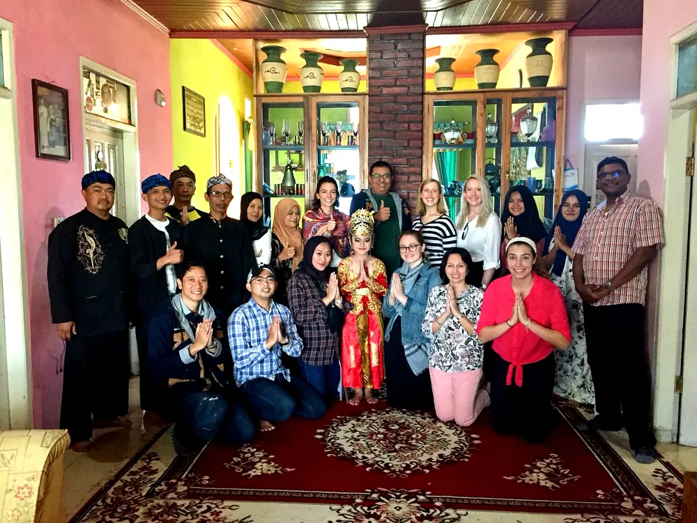
01
Cultural Immersion
Step inside living traditions — not as spectators, but as guests who listen, participate, and learn.
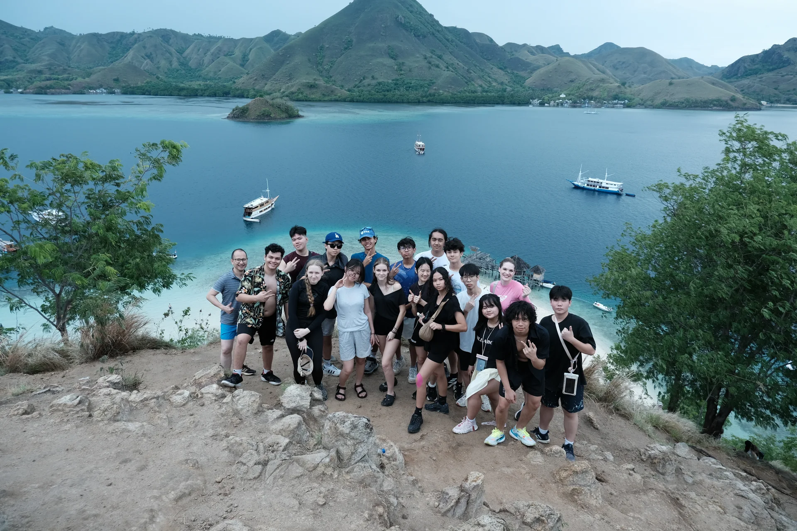
We design meaningful educational journeys for schools, universities, and youth institutions — where students learn through culture, nature, sustainability, leadership, and community.
For Indonesian and international schools, universities, and student groups.
EastXperience bridges travel, learning, and human connection. We are not a sightseeing operator — we are an educational journey designer.
Every program is built around defined learning outcomes, safety, cultural sensitivity, seamless logistics, and meaningful reflection. Students don't just visit Indonesia; they engage with it — guided, supported, and challenged to grow.
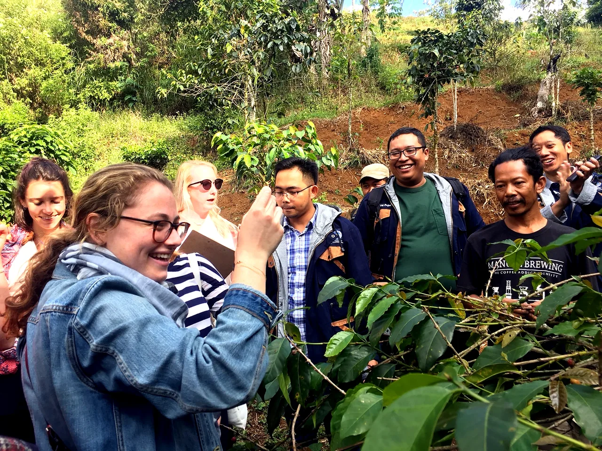
Real-world journeys turn abstract academic themes into lived understanding — and shape capable, globally aware young people.
Concepts from the syllabus come alive through direct, field-based experience.
Genuine encounters build respect, curiosity, and an open global mindset.
Students witness conservation and local economies as living systems.
Shared challenges develop initiative, collaboration, and resilience.
A wider worldview, formed through real places and real people.
Each activity links back to curriculum themes and reflective outcomes.
Each program is composed from these pillars and weighted to your institution's goals, age group, and academic focus.

Step inside living traditions — not as spectators, but as guests who listen, participate, and learn.
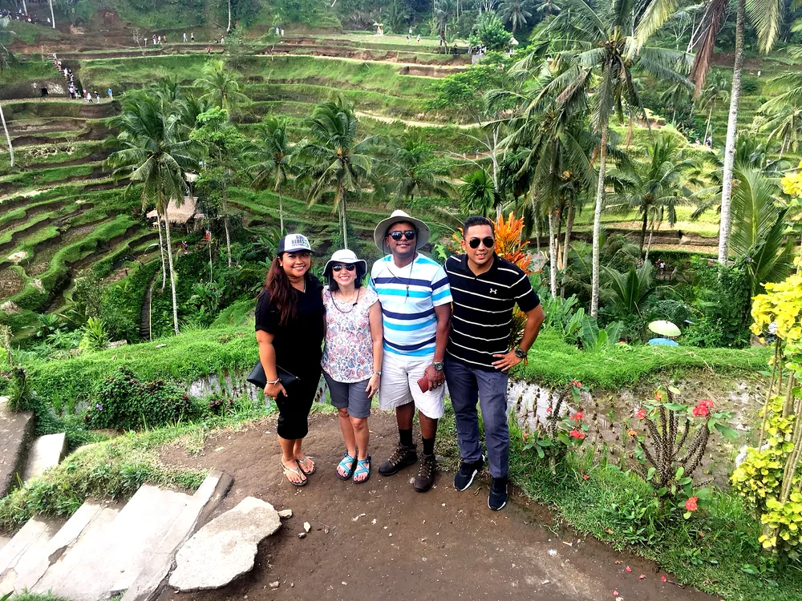
From rice terraces to marine parks, students explore ecology and the practice of sustainability.
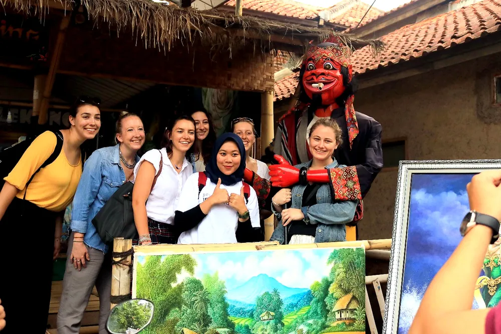
Learning rooted in real villages and local economies, designed to benefit the communities that host us.
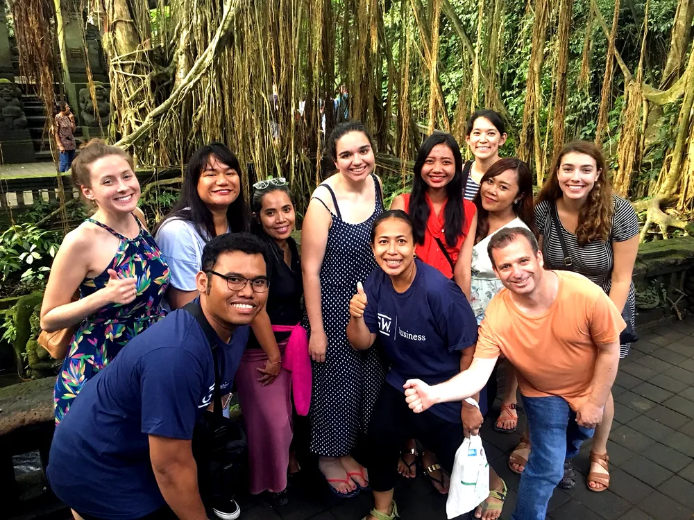
Structured challenges and group missions that build initiative, communication, and trust.
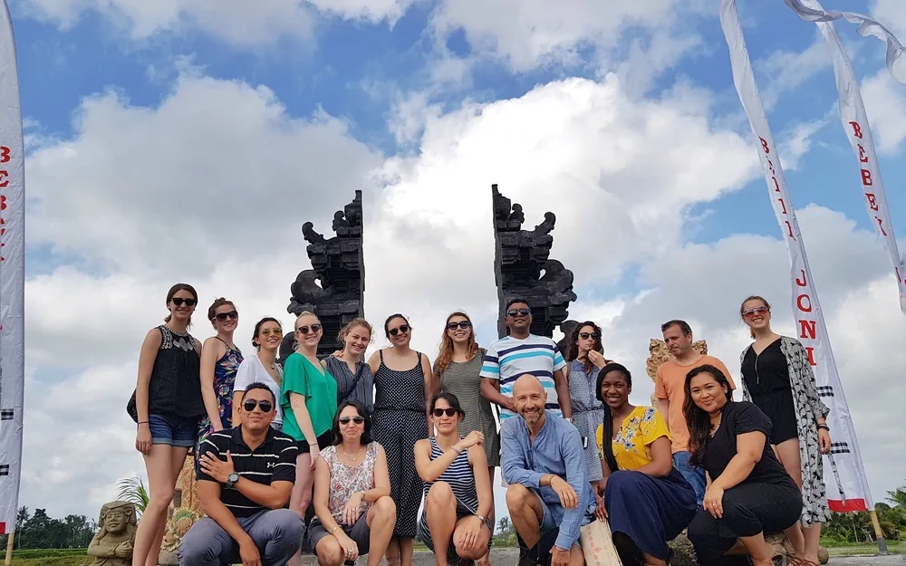
Temples, history, and indigenous knowledge systems — read as living context, not museum pieces.
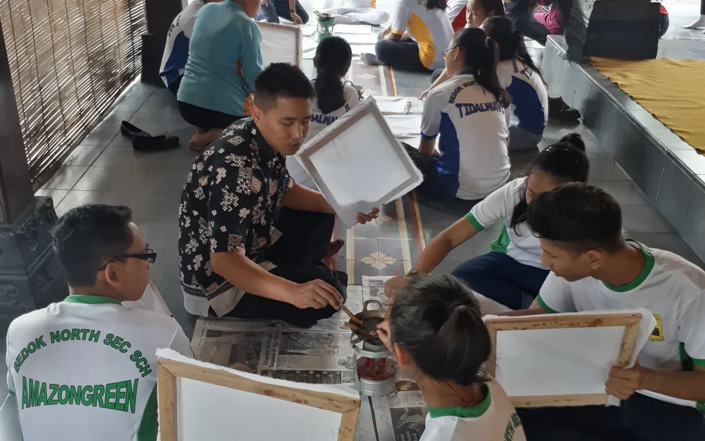
Guided reflection and student presentations turn experience into lasting personal insight.
Programs can focus on a single region or connect destinations into a layered learning journey across Indonesia.
Culture, temples, arts, agriculture, wellness, village cycling, and community-based local wisdom.
Heritage, creative economy, geology, tea plantations, volcanoes, and leadership programs.
Marine conservation, Komodo National Park, island ecology, and village immersion.
History, culture, heritage, creative economy, and an intercity learning journey.
Island culture, soft adventure, coastal ecology, community, and student leadership.
Hidden Indonesia — diversity, marine life, conservation, resilience, and local wisdom.
Trade the bus for two wheels. Students ride past rice fields, village temples, and family compounds — meeting Bali at the pace of the people who live there.
A guided, safety-briefed Bali cycling tour that turns geography, agriculture, and community into something students feel — not just observe. Routes and intensity are matched to each group's age and ability.
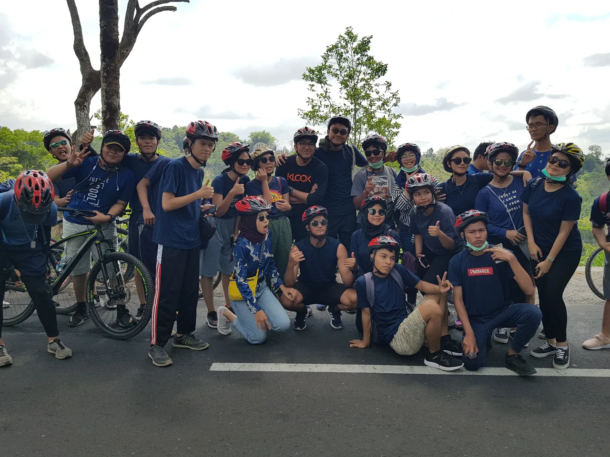
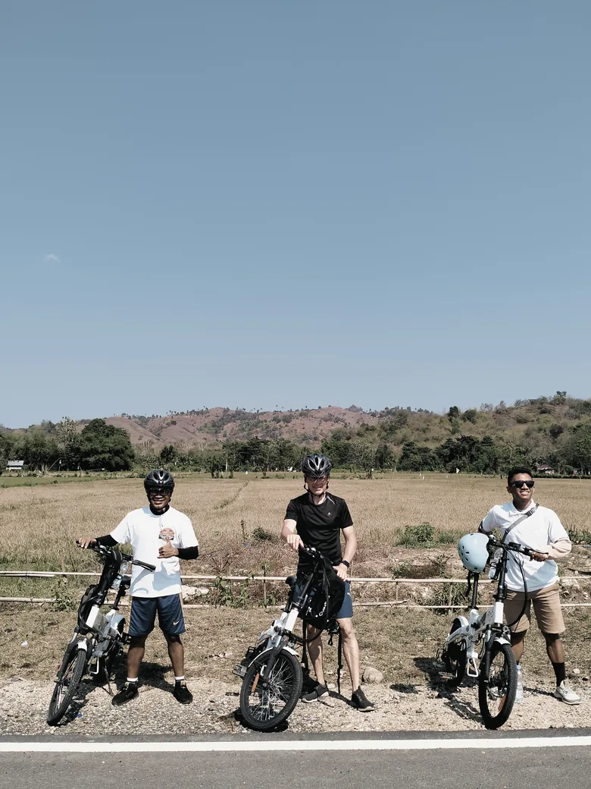
Bali · by bikeA starting point, not a menu. Each format is shaped to your curriculum, age group, and objectives.
Curriculum-linked cultural and field immersion for school groups.
Research-oriented visits with local experts and site access.
Team challenges and reflection that develop young leaders.
Conservation and community-based learning in the field.
Heritage, history, and the living traditions of Indonesia.
Values-aligned programs with halal-friendly arrangements.
On-ground support for international student exchange.
Structured community engagement and contribution.
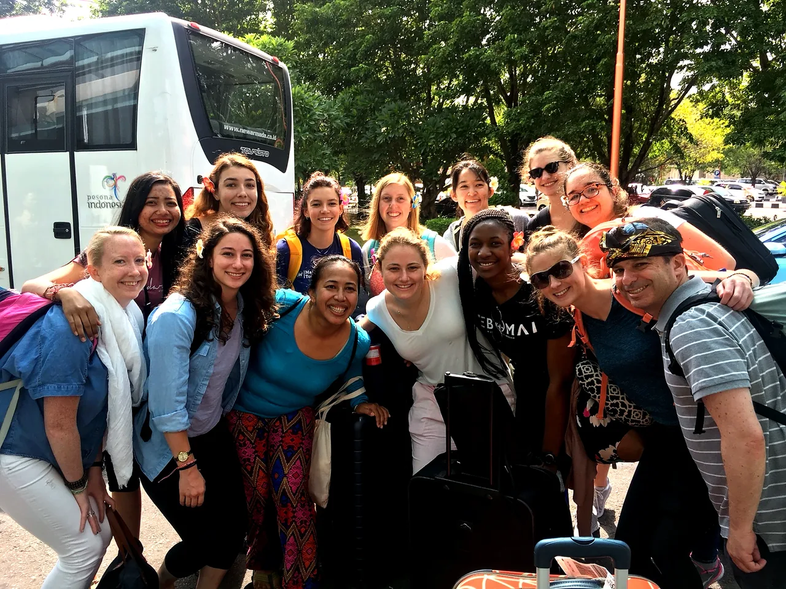
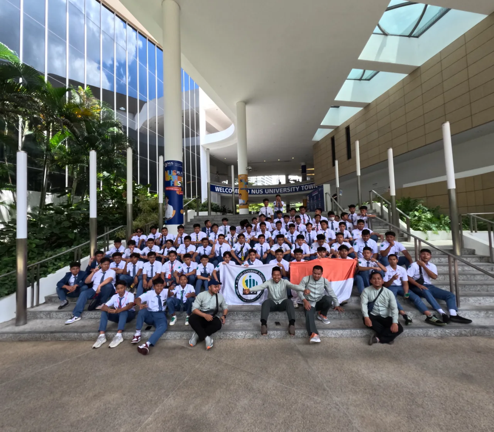
EastXperience has designed and supported educational journeys for a range of school and university groups — both Indonesian and international institutions.
Institutions and groups we have worked with or designed programs for. Listed to illustrate the breadth of our field experience.
Beyond memories, our programs are designed to leave students measurably changed.
A deeper, first-hand grasp of difference, context, and shared humanity.
Confidence to take initiative and collaborate under real conditions.
An understanding of ecology and local communities as connected systems.
Ease and confidence connecting across language and culture.
Theory grounded in the texture of real places and real lives.
Reflection on personal growth and one's place in a wider world.
Institutions trust us because we handle the details that keep students safe and programs running smoothly — end to end.
Every program includes a clear safety framework, briefed itineraries, and a responsive on-ground team — so teachers can focus on their students, not the logistics.
Every institution arrives with different goals. We design from your starting point, not a fixed package.
A snapshot of how a journey can flow. Your final itinerary is customized after a short consultation with your team.
Welcome, safety briefing, and cultural orientation to set intentions for the week.
Community visit, local economy, and a guided heritage walk.
Field-based sustainability learning followed by a guided reflection session.
Team challenge, creative workshop, and student presentations.
Closing reflection, consolidation of learning, and departure.
A detailed proposal and day-by-day itinerary are tailored to your institution after consultation.
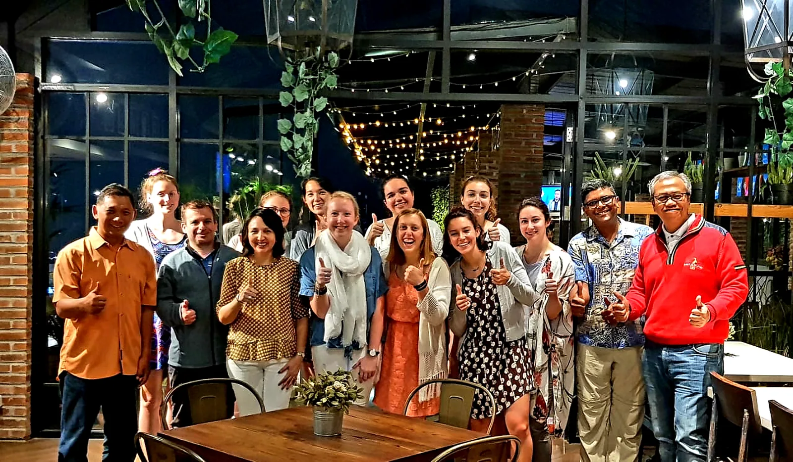
Tell us your goals, group, and timing — we'll respond with ideas and a tailored program proposal.
Yes. Every program is built around your academic theme, student profile, duration, budget, destinations, and learning outcomes. No two institutions receive the same itinerary.
Yes. We design and operate programs for international schools, universities, and study-abroad groups, with English-speaking facilitators and clear coordination for teachers and group leaders.
Yes. Halal-friendly meals and other dietary or religious requirements are arranged as standard when required.
Yes. We support university field studies and research-oriented visits, including site access, local experts, community partners, and academic context.
Absolutely. We co-design with your educators so the journey maps directly to your curriculum and intended learning outcomes.
Yes. We provide local guides and trained facilitators who lead activities, briefings, and reflection sessions throughout the program.
Bali, Bandung and West Java, Java overland, Labuan Bajo and Flores, Lombok, and Eastern Indonesia. Programs can combine destinations into a layered learning journey.
We recommend three to six months ahead for full customization, logistics, and risk planning. Shorter timelines can often be accommodated — just ask.
Yes. Structured reflection and student presentations are built into our programs to consolidate learning and personal growth.
Yes. We tailor activities, supervision, pacing, and risk level to the age group, including junior high school students.